Code
source("../dsan-globals/_globals.r")
set.seed(5300)DSAN 5300: Statistical Learning
Spring 2026, Georgetown University
Today’s Planned Schedule:
| Start | End | Topic | |
|---|---|---|---|
| Lecture | 6:30pm | 7:10pm | Simple Linear Regression → |
| 7:10pm | 7:30pm | Deriving the OLS Solution → | |
| 7:30pm | 8:00pm | Interpreting OLS Output → | |
| Break! | 8:00pm | 8:10pm | |
| 8:10pm | 8:30pm | Quiz Review → | |
| 8:30pm | 9:00pm | Quiz 2! |
What happens to my dependent variable \(Y\) when my independent variable \(X\) increases by 1 unit?
Keep the goal in front of your mind:
source("../dsan-globals/_globals.r")
set.seed(5300)\[ \DeclareMathOperator*{\argmax}{argmax} \DeclareMathOperator*{\argmin}{argmin} \newcommand{\bigexp}[1]{\exp\mkern-4mu\left[ #1 \right]} \newcommand{\bigexpect}[1]{\mathbb{E}\mkern-4mu \left[ #1 \right]} \newcommand{\definedas}{\overset{\small\text{def}}{=}} \newcommand{\definedalign}{\overset{\phantom{\text{defn}}}{=}} \newcommand{\eqeventual}{\overset{\text{eventually}}{=}} \newcommand{\Err}{\text{Err}} \newcommand{\expect}[1]{\mathbb{E}[#1]} \newcommand{\expectsq}[1]{\mathbb{E}^2[#1]} \newcommand{\fw}[1]{\texttt{#1}} \newcommand{\given}{\mid} \newcommand{\green}[1]{\color{green}{#1}} \newcommand{\heads}{\outcome{heads}} \newcommand{\iid}{\overset{\text{\small{iid}}}{\sim}} \newcommand{\lik}{\mathcal{L}} \newcommand{\loglik}{\ell} \DeclareMathOperator*{\maximize}{maximize} \DeclareMathOperator*{\minimize}{minimize} \newcommand{\mle}{\textsf{ML}} \newcommand{\nimplies}{\;\not\!\!\!\!\implies} \newcommand{\orange}[1]{\color{orange}{#1}} \newcommand{\outcome}[1]{\textsf{#1}} \newcommand{\param}[1]{{\color{purple} #1}} \newcommand{\pgsamplespace}{\{\green{1},\green{2},\green{3},\purp{4},\purp{5},\purp{6}\}} \newcommand{\pedge}[2]{\require{enclose}\enclose{circle}{~{#1}~} \rightarrow \; \enclose{circle}{\kern.01em {#2}~\kern.01em}} \newcommand{\pnode}[1]{\require{enclose}\enclose{circle}{\kern.1em {#1} \kern.1em}} \newcommand{\ponode}[1]{\require{enclose}\enclose{box}[background=lightgray]{{#1}}} \newcommand{\pnodesp}[1]{\require{enclose}\enclose{circle}{~{#1}~}} \newcommand{\purp}[1]{\color{purple}{#1}} \newcommand{\sign}{\text{Sign}} \newcommand{\spacecap}{\; \cap \;} \newcommand{\spacewedge}{\; \wedge \;} \newcommand{\tails}{\outcome{tails}} \newcommand{\Var}[1]{\text{Var}[#1]} \newcommand{\bigVar}[1]{\text{Var}\mkern-4mu \left[ #1 \right]} \]
library(tidyverse)
set.seed(5321)
N <- 11
x <- seq(from = 0, to = 1, by = 1 / (N - 1))
y <- x + rnorm(N, 0, 0.2)
mean_y <- mean(y)
spread <- y - mean_y
df <- tibble(x = x, y = y, spread = spread)
ggplot(df, aes(x=x, y=y)) +
geom_abline(slope=1, intercept=0, linetype="dashed", color=cbPalette[1], linewidth=g_linewidth*1.5) +
geom_segment(xend=(x+y)/2, yend=(x+y)/2, linewidth=g_linewidth*2, color=cbPalette[2]) +
geom_point(size=g_pointsize) +
coord_equal() +
xlim(0, 1) + ylim(0, 1) +
dsan_theme("half") +
labs(
title = "Principal Component Line"
)
ggplot(df, aes(x=x, y=y)) +
geom_abline(slope=1, intercept=0, linetype="dashed", color=cbPalette[1], linewidth=g_linewidth*1.5) +
geom_segment(xend=x, yend=x, linewidth=g_linewidth*2, color=cb_palette[3]) +
geom_point(size=g_pointsize) +
coord_equal() +
xlim(0, 1) + ylim(0, 1) +
dsan_theme("half") +
labs(
title = "Regression Line"
)
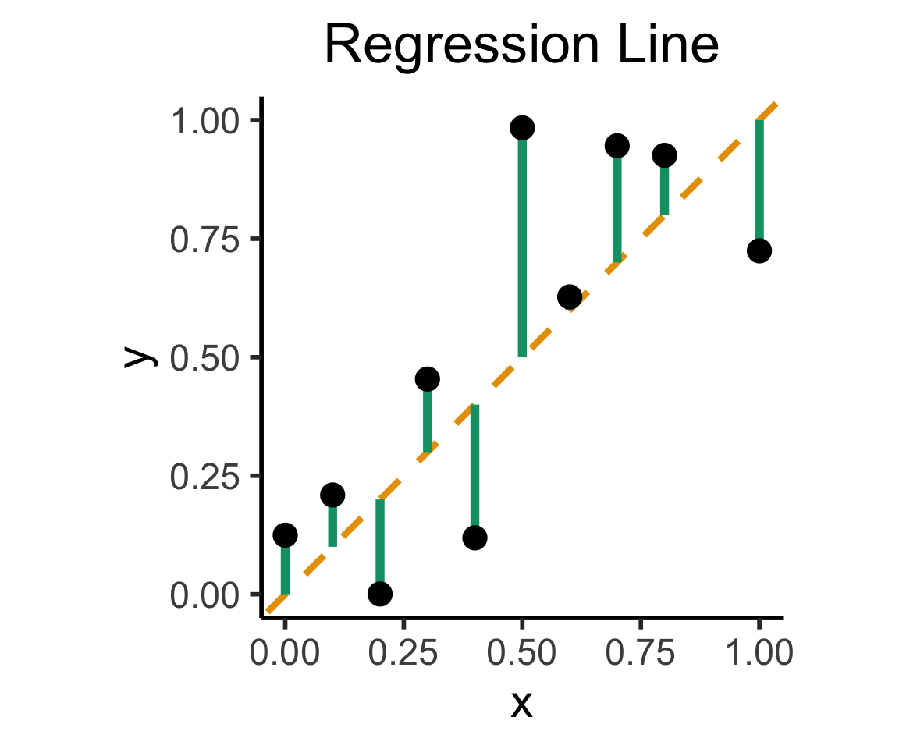
On the difference between these two lines, and why it matters, I cannot recommend Gelman and Hill (2007) enough!
library(readr)
library(ggplot2)
gdp_df <- read_csv("assets/gdp_pca.csv")
dist_to_line <- function(x0, y0, a, c) {
numer <- abs(a * x0 - y0 + c)
denom <- sqrt(a * a + 1)
return(numer / denom)
}
# Finding PCA line for industrial vs. exports
x <- gdp_df$industrial
y <- gdp_df$exports
lossFn <- function(lineParams, x0, y0) {
a <- lineParams[1]
c <- lineParams[2]
return(sum(dist_to_line(x0, y0, a, c)))
}
o <- optim(c(0, 0), lossFn, x0 = x, y0 = y)
ggplot(gdp_df, aes(x = industrial, y = exports)) +
geom_point(size=g_pointsize/2) +
geom_abline(aes(slope = o$par[1], intercept = o$par[2], color="pca"), linewidth=g_linewidth, show.legend = TRUE) +
geom_smooth(aes(color="lm"), method = "lm", se = FALSE, linewidth=g_linewidth, key_glyph = "blank") +
scale_color_manual(element_blank(), values=c("pca"=cbPalette[2],"lm"=cbPalette[1]), labels=c("Regression","PCA")) +
dsan_theme("half") +
remove_legend_title() +
labs(
title = "PCA Line vs. Regression Line",
x = "Industrial Production (% of GDP)",
y = "Exports (% of GDP)"
)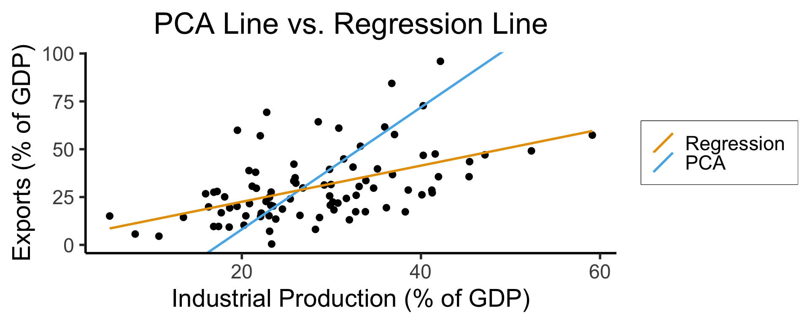
See this amazing blog post using PCA, with 2 dimensions, to explore UN voting patterns!
ggplot(gdp_df, aes(pc1, .fittedPC2)) +
geom_point(size = g_pointsize/2) +
geom_hline(aes(yintercept=0, color='PCA Line'), linetype='solid', size=g_linesize) +
geom_rug(sides = "b", linewidth=g_linewidth/1.2, length = unit(0.1, "npc"), color=cbPalette[3]) +
expand_limits(y=-1.6) +
scale_color_manual(element_blank(), values=c("PCA Line"=cbPalette[2])) +
dsan_theme("full") +
remove_legend_title() +
labs(
title = "Exports vs. Industrial Production in Principal Component Space",
x = "First Principal Component (Dimension of Greatest Variance)",
y = "Second Principal Component"
)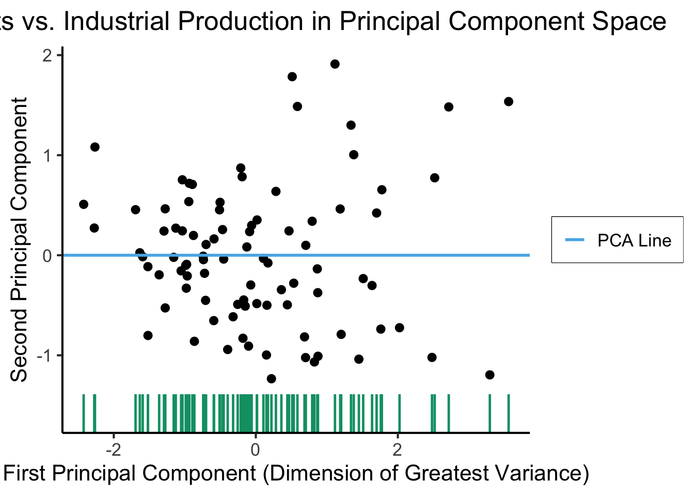
library(dplyr)
library(tidyr)
plot_df <- gdp_df %>% select(c(country_code, pc1, agriculture, military))
long_df <- plot_df %>% pivot_longer(!c(country_code, pc1), names_to = "var", values_to = "val")
long_df <- long_df |> mutate(
var = case_match(
var,
"agriculture" ~ "Agricultural Production",
"military" ~ "Military Spending"
)
)
ggplot(long_df, aes(x = pc1, y = val, facet = var)) +
geom_point() +
geom_smooth(method=lm, formula='y ~ x') +
facet_wrap(vars(var), scales = "free") +
dsan_theme("full") +
labs(
x = "\"Industrial-Export Dimension\" (First PC)",
y = "% of GDP"
)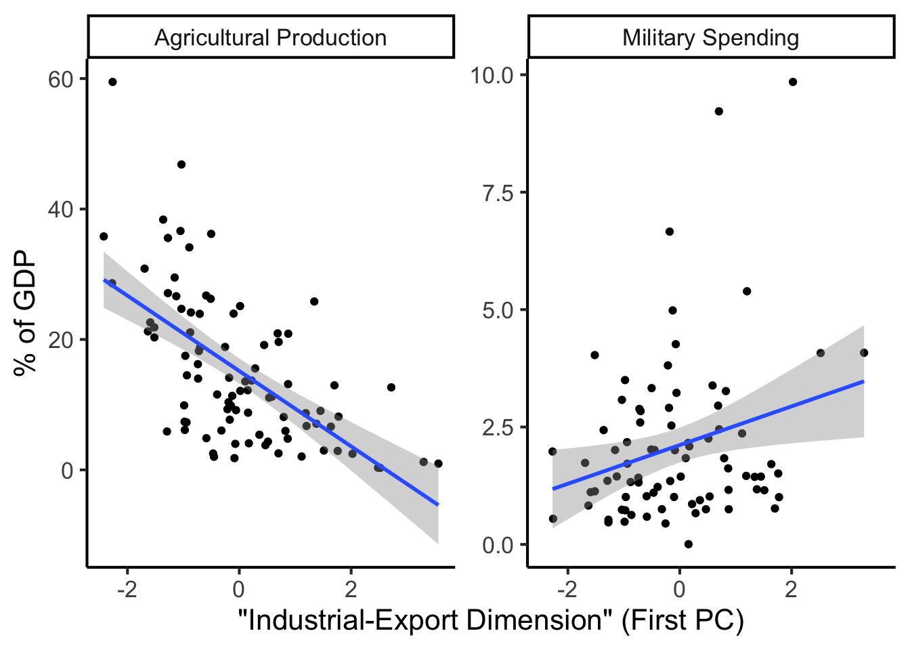
Given data \((X, Y)\), we estimate \(\widehat{y} = \widehat{\beta}_0 + \widehat{\beta}_1x\), hypothesizing that:
library(tidyverse)
ad_df <- read_csv("assets/Advertising.csv") |> rename(id=`...1`)
long_df <- ad_df |> pivot_longer(-c(id, sales), names_to="medium", values_to="allocation")
long_df |> ggplot(aes(x=allocation, y=sales)) +
geom_point() +
facet_wrap(vars(medium), scales="free_x") +
geom_smooth(method='lm', formula="y ~ x") +
theme_dsan() +
labs(
x = "Allocation ($1K)",
y = "Sales (1K Units)"
)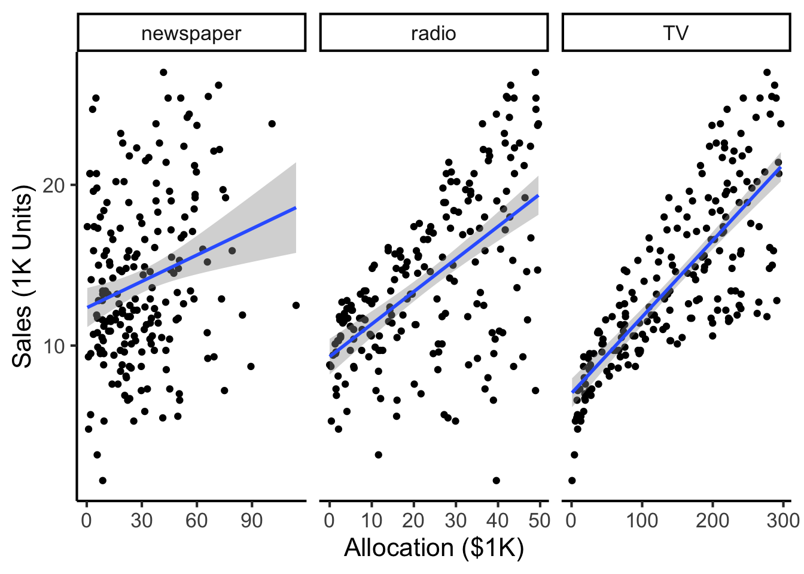
Our model:
\[ Y = \underbrace{\param{\beta_0}}_{\mathclap{\text{Intercept}}} + \underbrace{\param{\beta_1}}_{\mathclap{\text{Slope}}}X + \varepsilon \]
…Generates predictions via:
\[ \widehat{y} = \underbrace{\widehat{\beta}_0}_{\mathclap{\small\begin{array}{c}\text{Estimated} \\[-5mm] \text{intercept}\end{array}}} ~+~ \underbrace{\widehat{\beta}_1}_{\mathclap{\small\begin{array}{c}\text{Estimated} \\[-4mm] \text{slope}\end{array}}}\cdot x \]
\[ \widehat{\varepsilon}_i = \underbrace{y_i}_{\mathclap{\small\begin{array}{c}\text{Real} \\[-5mm] \text{label}\end{array}}} - \underbrace{\widehat{y}_i}_{\mathclap{\small\begin{array}{c}\text{Predicted} \\[-5mm] \text{label}\end{array}}} = \underbrace{y_i}_{\mathclap{\small\begin{array}{c}\text{Real} \\[-5mm] \text{label}\end{array}}} - \underbrace{ \left( \widehat{\beta}_0 + \widehat{\beta}_1 \cdot x \right) }_{\text{\small{Predicted label}}} \]
What can we optimize to ensure these residuals are as small as possible?
N <- 21
x <- seq(from = 0, to = 1, by = 1 / (N - 1))
y <- x + rnorm(N, 0, 0.25)
mean_y <- mean(y)
spread <- y - mean_y
sim_lg_df <- tibble(x = x, y = y, spread = spread)
sim_lg_df |> ggplot(aes(x=x, y=y)) +
geom_abline(slope=1, intercept=0, linetype="dashed", color=cbPalette[1], linewidth=g_linewidth) +
# geom_segment(xend=x, yend=x, linewidth=g_linewidth*2, color=cbPalette[2]) +
geom_segment(aes(xend=x, yend=x, color=ifelse(y>x,"Positive","Negative")), linewidth=1.5*g_linewidth) +
geom_point(size=g_pointsize) +
# coord_equal() +
theme_dsan("half") +
scale_color_manual("Spread", values=c("Positive"=cbPalette[3],"Negative"=cbPalette[6]), labels=c("Positive"="Positive","Negative"="Negative"))
large_sum <- sum(sim_lg_df$spread)
writeLines(fmt_decimal(large_sum))
large_sqsum <- sum((sim_lg_df$spread)^2)
writeLines(fmt_decimal(large_sqsum))
large_abssum <- sum(abs(sim_lg_df$spread))
writeLines(fmt_decimal(large_abssum))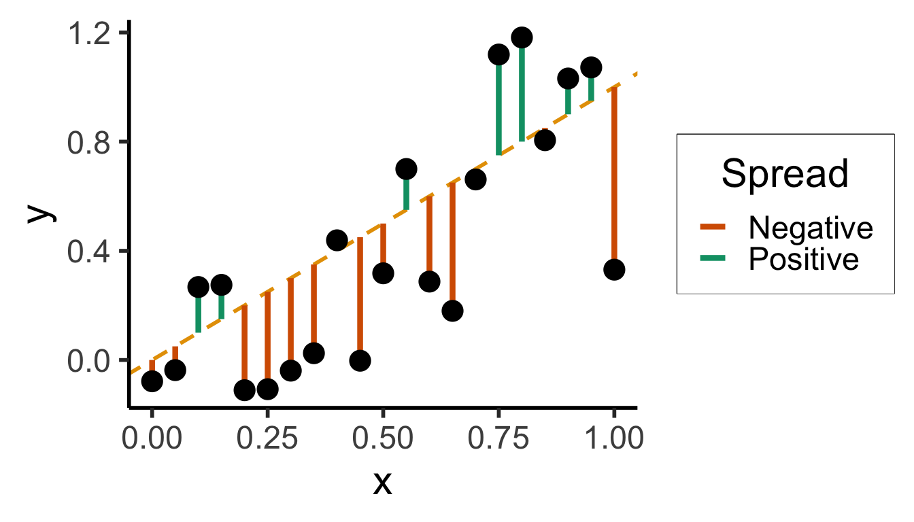
Sum?
0.0000000000Sum of Squares?
3.8405017200Sum of absolute vals?
7.6806094387N <- 21
x <- seq(from = 0, to = 1, by = 1 / (N - 1))
y <- x + rnorm(N, 0, 0.05)
mean_y <- mean(y)
spread <- y - mean_y
sim_sm_df <- tibble(x = x, y = y, spread = spread)
sim_sm_df |> ggplot(aes(x=x, y=y)) +
geom_abline(slope=1, intercept=0, linetype="dashed", color=cbPalette[1], linewidth=g_linewidth) +
# geom_segment(xend=x, yend=x, linewidth=g_linewidth*2, color=cbPalette[2]) +
geom_segment(aes(xend=x, yend=x, color=ifelse(y>x,"Positive","Negative")), linewidth=1.5*g_linewidth) +
geom_point(size=g_pointsize) +
# coord_equal() +
theme_dsan("half") +
scale_color_manual("Spread", values=c("Positive"=cbPalette[3],"Negative"=cbPalette[6]), labels=c("Positive"="Positive","Negative"="Negative"))
small_rsum <- sum(sim_sm_df$spread)
writeLines(fmt_decimal(small_rsum))
small_sqrsum <- sum((sim_sm_df$spread)^2)
writeLines(fmt_decimal(small_sqrsum))
small_abssum <- sum(abs(sim_sm_df$spread))
writeLines(fmt_decimal(small_abssum))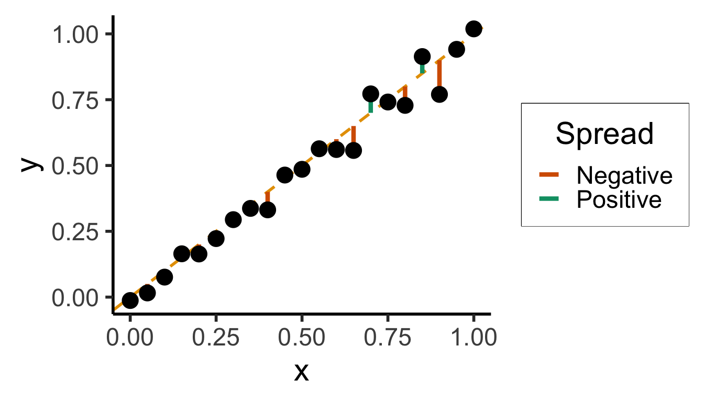
Sum?
0.0000000000Sum of Squares?
1.9748635217Sum of absolute vals?
5.5149697440# Could use facet_grid() here, but it doesn't work too nicely with stat_function() :(
ggplot(data.frame(x=c(-4,4)), aes(x=x)) +
stat_function(
fun =~ abs(.x),
linewidth=g_linewidth * 1.5,
color=cb_palette[1],
) +
dsan_theme("quarter") +
labs(
title="f(x) = |x|",
y="f(x)"
)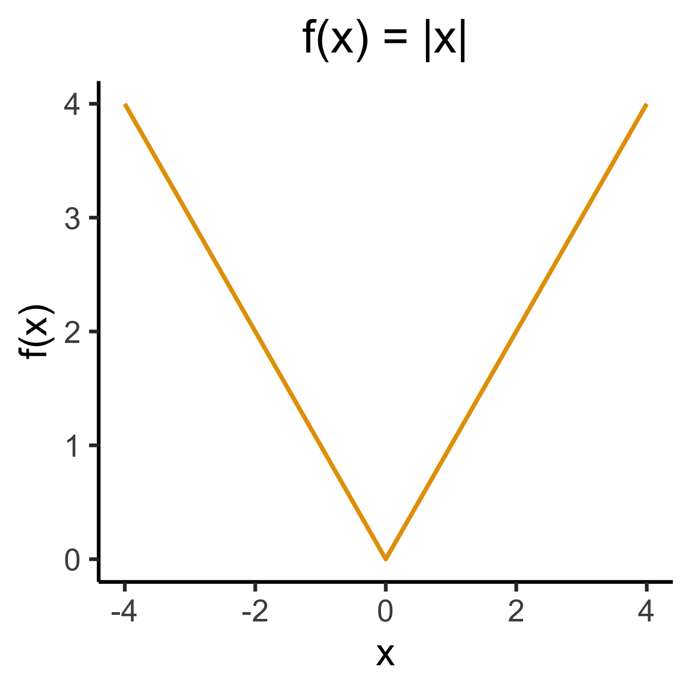
library(latex2exp)
x2_label <- TeX("$f(x) = x^2$")
ggplot(data.frame(x=c(-4,4)), aes(x=x)) +
stat_function(
fun =~ .x^2,
linewidth = g_linewidth * 1.5,
color=cb_palette[2],
) +
dsan_theme("quarter") +
labs(
title=x2_label,
y="f(x)"
)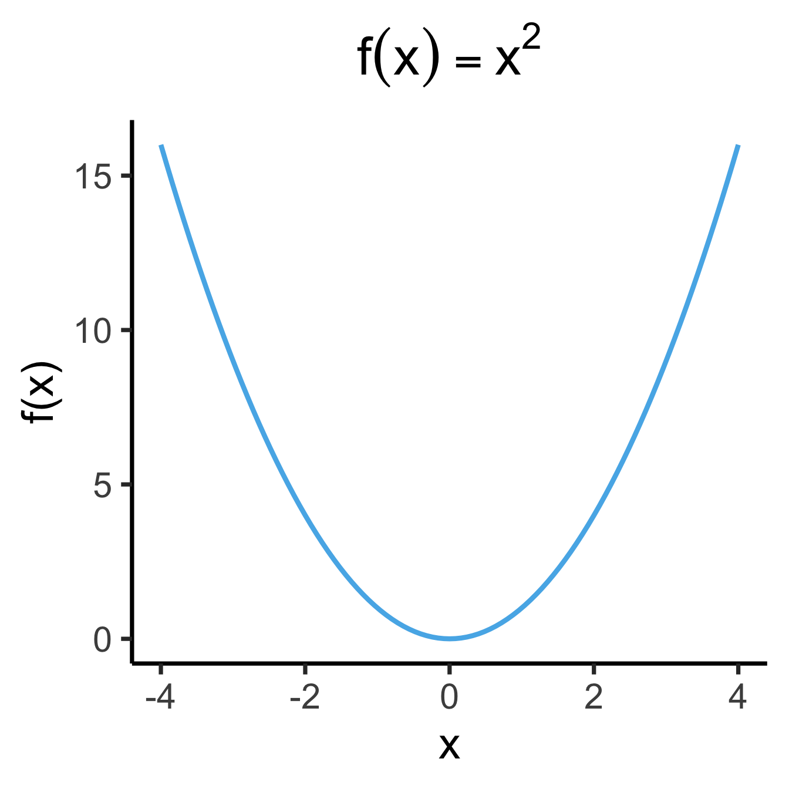
library(latex2exp)
set.seed(5300)
slope <- 0.5
x_vals <- seq(from = -20, to = 20, length.out = 15)
N <- length(x_vals)
y_vals <- slope * x_vals + rnorm(N, 0, 5)
spread_vals <- y_vals - slope * x_vals
sim_lg_df <- tibble(
x = x_vals, y = y_vals, spread = spread_vals
)
abs_sum <- round(sum(abs(sim_lg_df$spread)), 3)
abs_label <- TeX(paste0("$\\Sigma = ",abs_sum,"$"))
sim_lg_df |> ggplot(aes(x=x, y=y)) +
geom_point(size=g_pointsize * 0.9) +
geom_abline(
slope=slope,
intercept=0,
linetype="dashed",
color='black',
linewidth=g_linewidth
) +
geom_segment(
aes(xend=x, yend=slope * x),
arrow=arrow(
angle=90,
length=unit(0.125,'inches'),
ends='both'
),
linewidth=1.5*g_linewidth,
color=cb_palette[7],
alpha=0.9,
) +
ylim(-15, 15) +
xlim(-20, 27.5) +
coord_equal() +
theme_dsan(base_size=28) +
labs(title="Absolute Penalties") +
geom_text(
data=data.frame(x=15, y=-10), label=abs_label,
size=12
)
sq_sum <- round(sum((sim_lg_df$spread)^2), 3)
sq_label <- TeX(paste0("$\\Sigma = ",sq_sum,"$"))
sim_lg_df |> ggplot(aes(x=x, y=y)) +
geom_point(size=g_pointsize * 0.9) +
geom_abline(
slope=slope,
intercept=0,
linetype="dashed",
color='black',
linewidth=g_linewidth
) +
geom_rect(
aes(
xmin=x,
xmax=x+abs(spread),
ymin=ifelse(spread < 0, y, y - spread),
ymax=ifelse(spread < 0, y - spread, y)
),
color='black',
fill=cb_palette[7],
alpha=0.2,
) +
ylim(-15, 15) +
xlim(-20, 27.5) +
coord_equal() +
theme_dsan(base_size=30) +
labs(title="Squared Penalties") +
geom_text(
data=data.frame(x=15, y=-10), label=sq_label,
size=12
)Warning in is.na(x): is.na() applied to non-(list or vector) of type
'expression'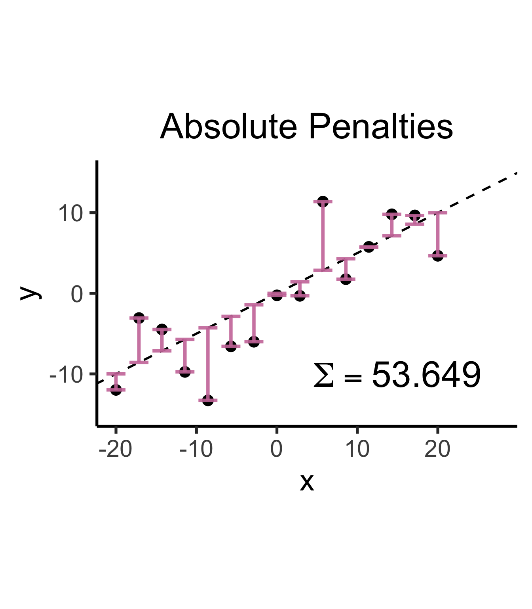
Warning in is.na(x): is.na() applied to non-(list or vector) of type
'expression'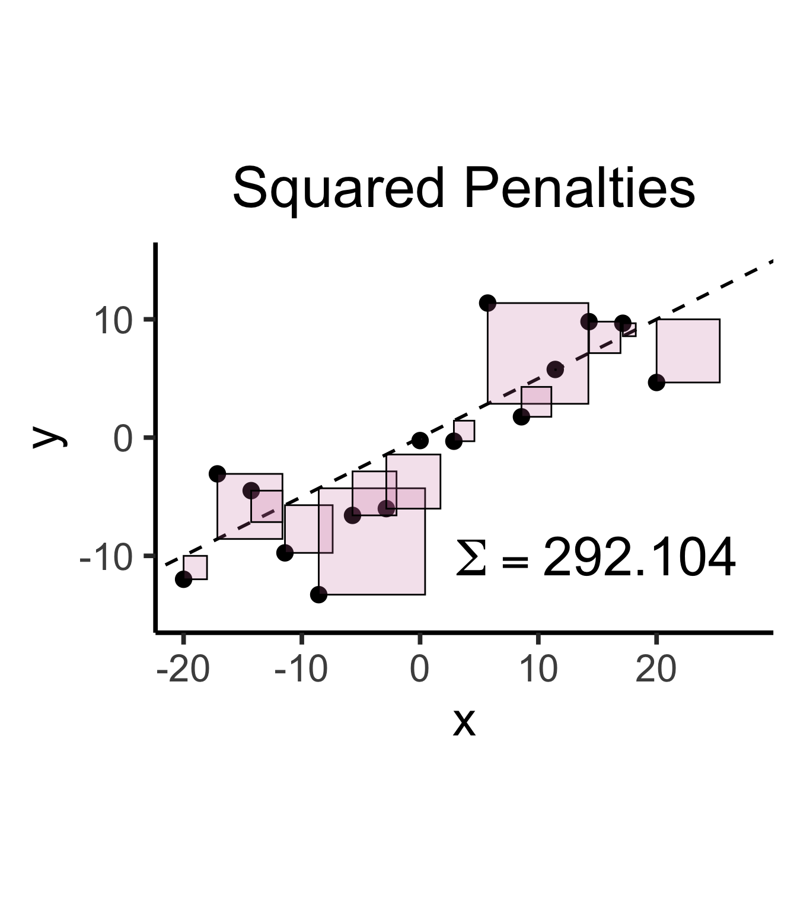
\[ \widehat{y} = \underbrace{\widehat{\beta}_0}_{\mathclap{\small\begin{array}{c}\text{Estimated} \\[-5mm] \text{intercept}\end{array}}} ~+~ \underbrace{\widehat{\beta}_1}_{\mathclap{\small\begin{array}{c}\text{Estimated} \\[-4mm] \text{slope}\end{array}}}\cdot x \]
is chosen so that
\[ \widehat{\theta} = \left(\widehat{\beta}_0, \widehat{\beta}_1\right) = \argmin_{\beta_0, \beta_1}\left[ \sum_{x_i \in X} \left(~~\overbrace{\widehat{y}(x_i)}^{\mathclap{\small\text{Predicted }y}} - \overbrace{\expect{Y \mid X = x_i}}^{\small \text{Avg. }y\text{ when }x = x_i}\right)^{2~} \right] \]
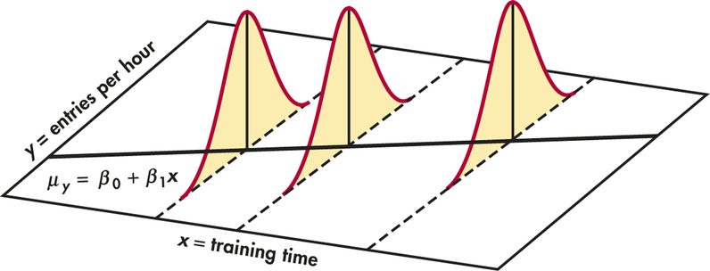
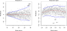
“Fitting” a statistical model to data means minimizing some loss function that measures “how bad” our predictions are:
Find \(x^*\), the solution to
\[ \begin{align} \min_{x} ~ & f(x) &\text{(Objective function)} \\ \text{s.t. } ~ & g(x) = 0 &\text{(Constraints)} \end{align} \]
\[ x^* = \argmax_{x,~\lambda}f(x) - \lambda[g(x)] \]
(Why worry about constraints when OLS is unconstrained? …Soon we’ll need to penalize complexity!)
Find \(x^*\), the solution to
\[ \begin{align} \min_{x} ~ & f(x) = 3x^2 - x \\ \text{s.t. } ~ & \varnothing \end{align} \]
Computing the derivative:
\[ f'(x) = \frac{\partial}{\partial x}f(x) = \frac{\partial}{\partial x}\left[3x^2 - x\right] = 6x - 1, \]
Solving for \(x^*\), the value(s) satisfying \(\frac{\partial}{\partial x}f'(x^*) = 0\) for just-derived \(f'(x)\):
\[ f'(x^*) = 0 \iff 6x^* - 1 = 0 \iff x^* = \frac{1}{6}. \]
| Type of Thing | Thing | Change in Thing when \(x\) Changes by Tiny Amount |
|---|---|---|
| Polynomial | \(f(x) = x^n\) | \(f'(x) = \frac{\partial}{\partial x}f(x) = nx^{n-1}\) |
| Fraction | \(f(x) = \frac{1}{x}\) | Use Polynomial rule (since \(\frac{1}{x} = x^{-1}\)) to get \(f'(x) = -\frac{1}{x^2}\) |
| Logarithm | \(f(x) = \ln(x)\) | \(f'(x) = \frac{\partial}{\partial x} = \frac{1}{x}\) |
| Exponential | \(f(x) = e^x\) | \(f'(x) = \frac{\partial}{\partial x}e^x = e^x\) (🧐❗️) |
| Multiplication | \(f(x) = g(x)h(x)\) | \(f'(x) = g'(x)h(x) + g(x)h'(x)\) |
| Division | \(f(x) = \frac{g(x)}{h(x)}\) | Too hard to memorize… turn it into Multiplication, as \(f(x) = g(x)(h(x))^{-1}\) |
| Composition (Chain Rule) | \(f(x) = g(h(x))\) | \(f'(x) = g'(h(x))h'(x)\) |
| Fancy Logarithm | \(f(x) = \ln(g(x))\) | \(f'(x) = \frac{g'(x)}{g(x)}\) by Chain Rule |
| Fancy Exponential | \(f(x) = e^{g(x)}\) | \(f'(x) = g'(x)e^{g(x)}\) by Chain Rule |